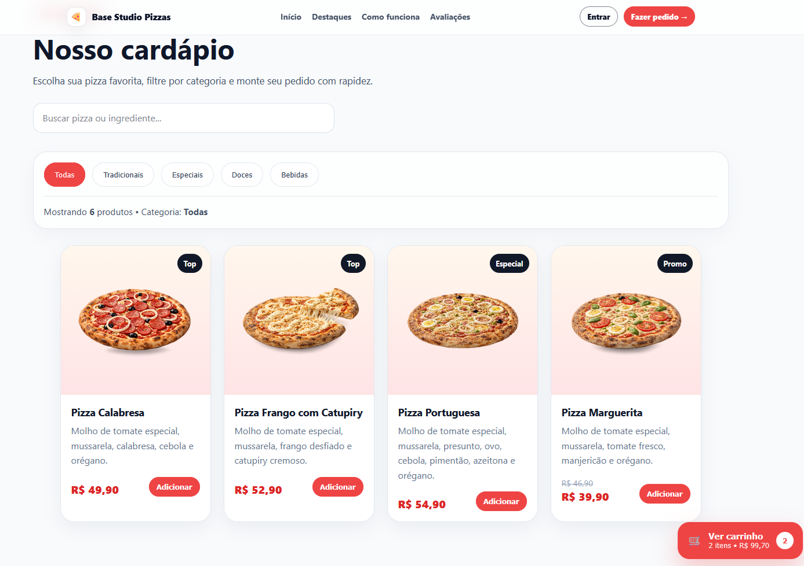

Aplicação concluída
Base Studio Pizzas
Aplicação de delivery com cardápio, carrinho, pedidos e painéis de acompanhamento. Projeto que reúne interface, dados e fluxos de usuários.
ReactJavaScriptSupabase